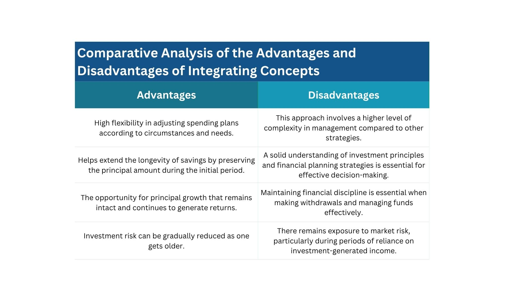
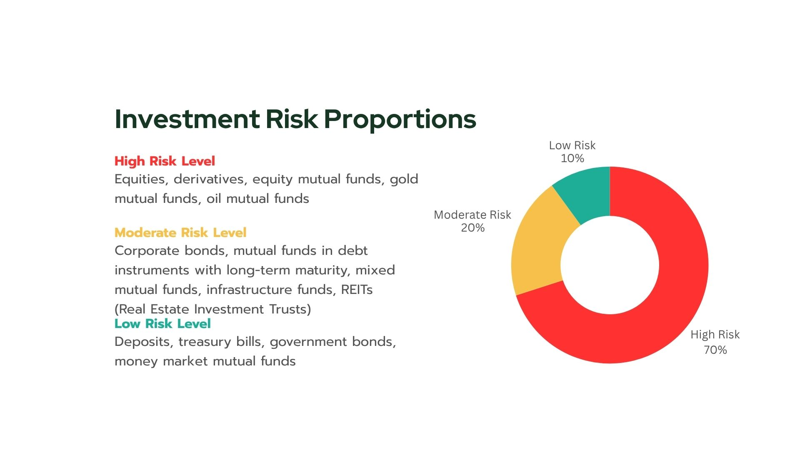
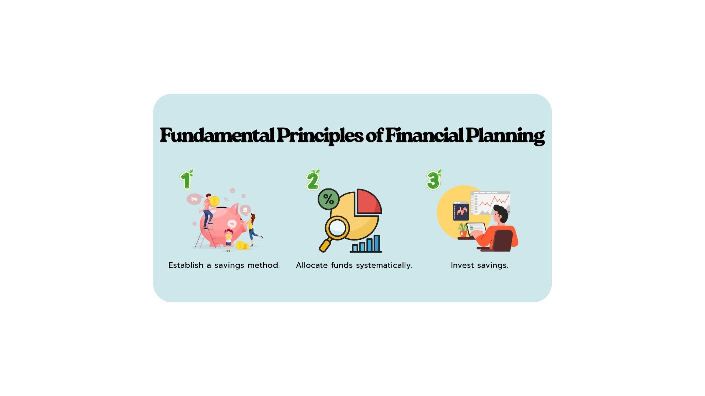
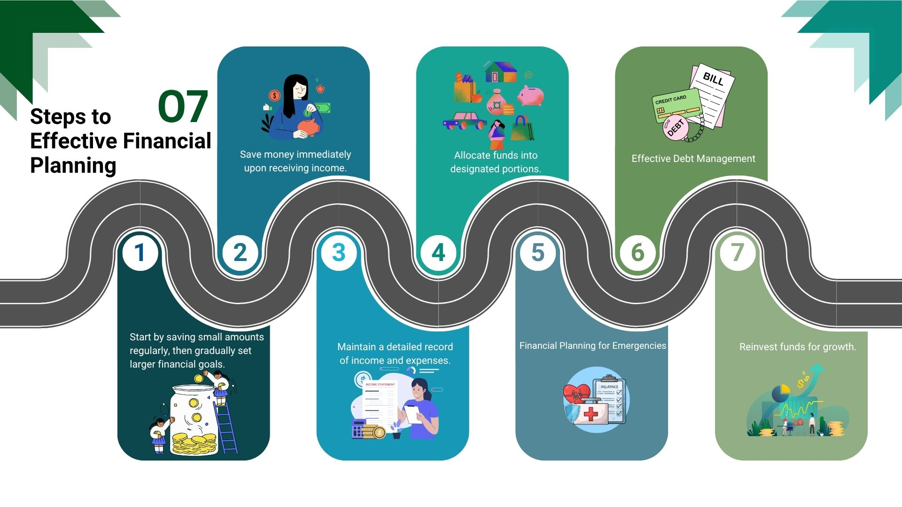
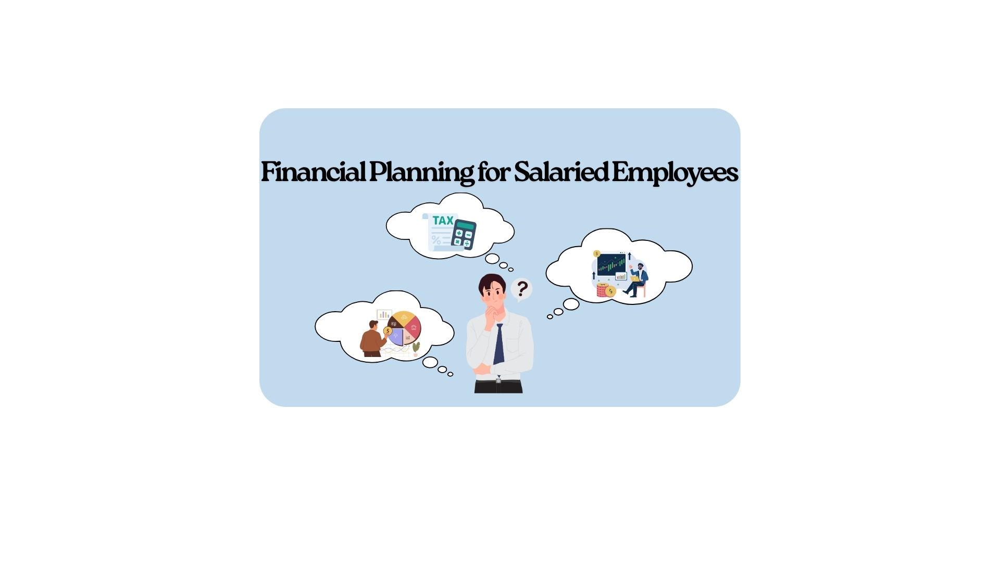
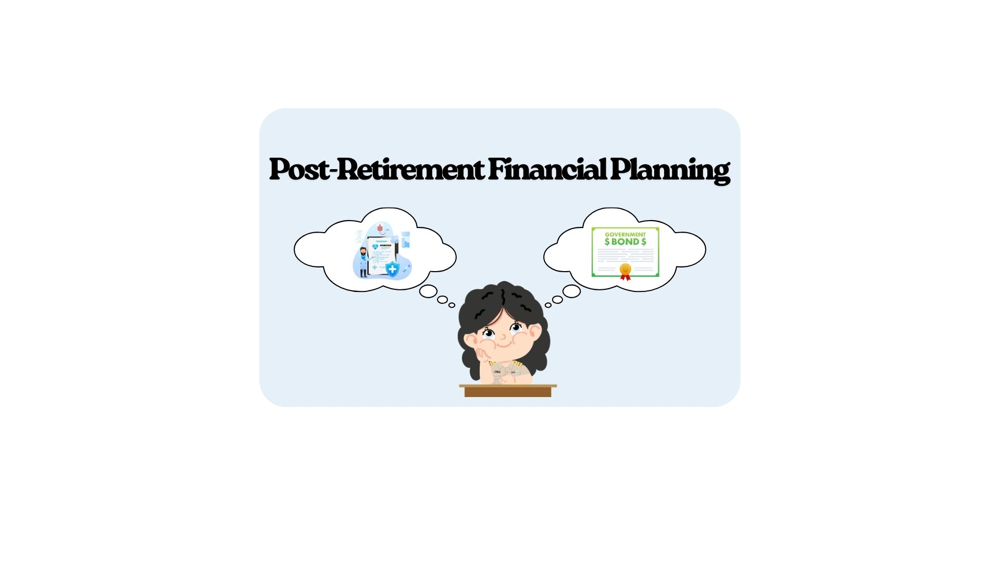
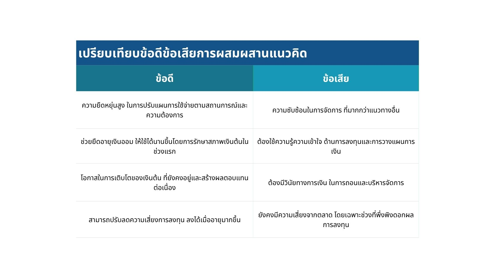
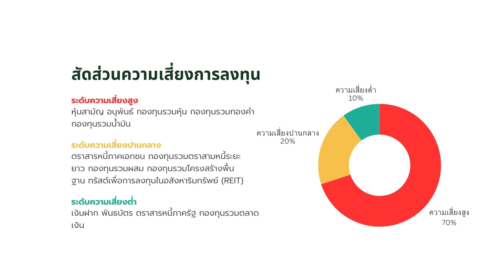
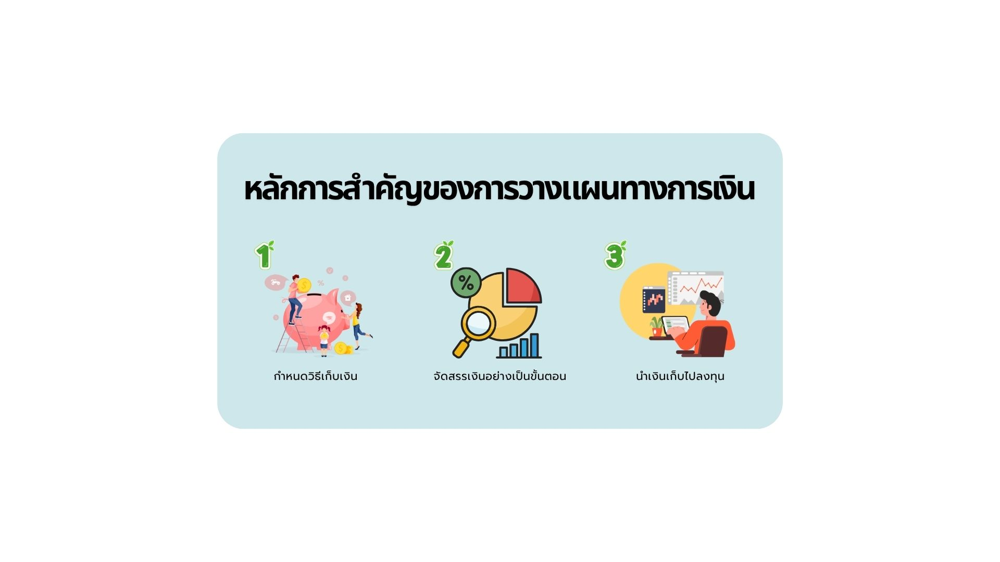
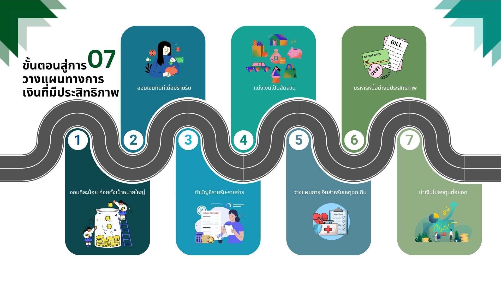

Tips for Saving Plan
Hybrid Approach

In practice, many retirees choose to combine both concepts of using savings and investment returns to ensure financial stability during retirement. This hybrid approach balances the need for immediate income with long-term growth.
- At the beginning of retirement: Focus on spending from returns and investment yields while preserving the principal to maintain a steady income stream.
- As you age: Gradually reduce investment risks by shifting to more conservative assets like bonds or fixed-income securities.
Voluntary Retirement Savings Tools

- Provident Fund: A voluntary savings tool between employers and employees, contributing to a retirement nest egg with potential employer matching.
- Retirement Mutual Fund (RMF): Offers tax incentives and allows individuals to invest in a diversified portfolio for retirement.
- Pension Insurance: Pay premiums until age 55–60, after which a steady pension is received to support post-retirement life.
Additional Voluntary Retirement Savings Tools

- Thai ESG Fund: Invests in bonds or Thai stocks promoting sustainability and environmental, social, and governance (ESG) principles.
- Super Savings Fund (SSF): A long-term savings fund with tax benefits, encouraging disciplined saving over time.
- Life Insurance: Includes endowment or whole life insurance policies that provide savings and a death benefit.
Risk Levels

Allocate investments according to risk levels suitable for age and financial goals, ensuring a balance between growth and security.
Tips for Spending
Financial planning is key to building stability and wealth, helping you manage expenses effectively while preparing for future needs.
Key Principles of Financial Planning

- Set saving methods: Save consistently by setting aside a fixed percentage of income each month.
- Allocate money systematically: Divide money clearly into categories such as savings, investments, and daily expenses.
- Invest savings: Grow savings to generate passive income through diversified investment options.
7 Steps to Effective Financial Planning
- Start small, aim big by setting realistic yet ambitious financial goals.
- Save immediately upon receiving income to build a habit of saving first.
- Keep a record of income and expenses to track your financial health.
- Divide money into portions for different purposes like emergencies and leisure.
- Plan for emergencies by maintaining an emergency fund covering 3-6 months of expenses.
- Manage debt effectively by prioritizing high-interest debts and avoiding over-borrowing.
- Invest to grow your wealth through stocks, bonds, or mutual funds based on your risk tolerance.
Financial Planning by Age

- For students: Focus on saving and controlling expenses to build early financial habits.
- For working adults: Allocate money wisely, prepare for taxes, and start long-term investments.
- For retirees: Focus on low-risk investments and manage health-related expenses to ensure a comfortable retirement.
เคล็ดลับการวางแผนการออมเงิน
แนวทางแบบผสม

ในทางปฏิบัติ ผู้เกษียณจำนวนมากเลือกใช้แนวทางแบบผสมในการใช้เงินออมและผลตอบแทนจากการลงทุน เพื่อให้มั่นคงทางการเงินในวัยเกษียณ แนวทางนี้ช่วยสร้างสมดุลระหว่างรายได้ทันทีและการเติบโตระยะยาว
- ช่วงเริ่มต้นของวัยเกษียณ: เน้นใช้ผลตอบแทนจากการลงทุนเพื่อรักษาเงินต้นไว้ให้งอกเงย และสร้างรายได้ที่สม่ำเสมอ
- เมื่ออายุมากขึ้น: ลดความเสี่ยงในการลงทุนลง โดยเปลี่ยนไปลงทุนในสินทรัพย์ที่ปลอดภัย เช่น พันธบัตรหรือตราสารหนี้
เครื่องมือออมเงินเพื่อวัยเกษียณ

- กองทุนสำรองเลี้ยงชีพ: การออมระหว่างนายจ้างและลูกจ้าง โดยมีส่วนช่วยจากนายจ้างเพื่อสะสมเงินเกษียณ
- กองทุนรวมเพื่อการเลี้ยงชีพ (RMF): ได้รับสิทธิประโยชน์ทางภาษี และให้ลงทุนในพอร์ตที่หลากหลายสำหรับวัยเกษียณ
- ประกันบำนาญ: ชำระเบี้ยประกันจนถึงอายุ 55–60 ปี จากนั้นจะได้รับบำนาญอย่างสม่ำเสมอเพื่อใช้ในวัยเกษียณ
เครื่องมือออมเพิ่มเติม

- กองทุน Thai ESG: ลงทุนในหุ้นหรือตราสารหนี้ที่ส่งเสริมความยั่งยืนและหลักการ ESG (Environment, Social, Governance)
- กองทุน SSF: เป็นกองทุนออมระยะยาวที่มีสิทธิประโยชน์ทางภาษี ส่งเสริมการออมอย่างมีวินัย
- ประกันชีวิต: รวมถึงประกันแบบสะสมทรัพย์และตลอดชีพ ที่ให้ทั้งการออมและผลประโยชน์กรณีเสียชีวิต
ระดับความเสี่ยง

ควรจัดสรรการลงทุนให้เหมาะกับอายุและเป้าหมายทางการเงิน เพื่อให้สมดุลระหว่างการเติบโตและความปลอดภัย
เคล็ดลับการใช้จ่าย
การวางแผนการเงินคือหัวใจของความมั่นคงและมั่งคั่ง ช่วยให้จัดการรายจ่ายได้อย่างมีประสิทธิภาพและเตรียมพร้อมสำหรับอนาคต
หลักการวางแผนการเงิน
- ตั้งวิธีการออม: ออมอย่างสม่ำเสมอโดยแบ่งเปอร์เซ็นต์จากรายได้ทุกเดือน
- จัดสรรเงินอย่างเป็นระบบ: แบ่งเงินเป็นสัดส่วนชัดเจน เช่น ออม ลงทุน และใช้จ่ายประจำวัน
- นำเงินออมไปลงทุน: เพิ่มมูลค่าเงินออมเพื่อสร้างรายได้passiveผ่านการลงทุนที่หลากหลาย
7 ขั้นตอนสู่การวางแผนการเงินที่มีประสิทธิภาพ
- เริ่มต้นจากเล็กไปใหญ่ โดยตั้งเป้าหมายทางการเงินที่เป็นจริงและท้าทาย
- ออมทันทีเมื่อมีรายได้ เพื่อสร้างนิสัยการออมเป็นลำดับแรก
- จดบันทึกรายรับ-รายจ่าย เพื่อติดตามสุขภาพทางการเงินของตนเอง
- แบ่งเงินเป็นสัดส่วนสำหรับวัตถุประสงค์ต่าง ๆ เช่น ฉุกเฉินและความสุขส่วนตัว
- วางแผนสำหรับกรณีฉุกเฉิน โดยมีเงินสำรอง 3-6 เดือนของรายจ่าย
- บริหารหนี้อย่างมีระบบ โดยให้ความสำคัญกับหนี้ที่มีดอกเบี้ยสูงและหลีกเลี่ยงการกู้หนี้เกินตัว
- ลงทุนเพื่อเติบโตทรัพย์สิน ผ่านหุ้น พันธบัตร หรือกองทุนตามระดับความเสี่ยงที่ยอมรับได้
การวางแผนการเงินตามช่วงวัย
- นักเรียน: เริ่มออมและควบคุมรายจ่าย เพื่อสร้างนิสัยการเงินตั้งแต่เนิ่น ๆ
- วัยทำงาน: แบ่งเงินอย่างชาญฉลาด เตรียมพร้อมสำหรับภาษี และเริ่มลงทุนระยะยาว
- วัยเกษียณ: เน้นลงทุนที่มีความเสี่ยงต่ำ และจัดการค่าใช้จ่ายด้านสุขภาพเพื่อการเกษียณที่สะดวกสบาย